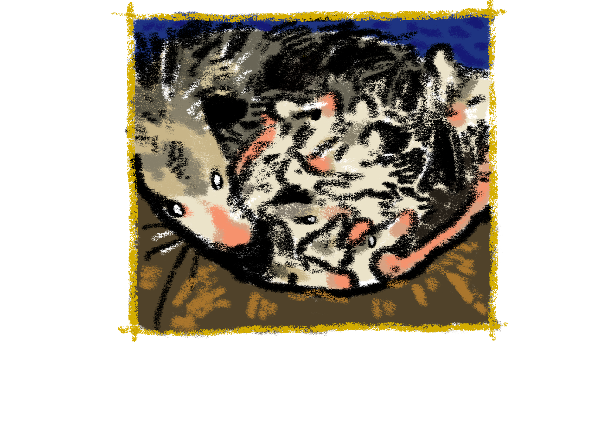
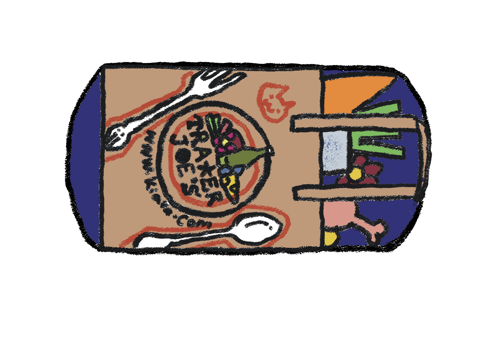

opossum
A Mysterious Tree Cavity
Nestled in the heart of ancient trees, this cozy cavity offers the opossum the perfect hideout, safe from predators and ready for a peaceful night’s sleep. With its secretive charm, it’s the ideal spot for a nocturnal adventurer to curl up and rest! 🌳

Top Location
Central Park
Central Park’s opossums are the park’s hidden night owls, quietly roaming under the cover of darkness. These nocturnal creatures thrive in the park’s dense underbrush, scurrying through the shadows while keeping a low profile. With their prehensile tails and curious nature, they’re the park’s stealthy residents—seldom seen, but always around, adding to the park’s rich diversity of wildlife! 🌳🦝🌙
Good Breakfast
Human Food
Opossums are opportunistic eaters, often indulging in leftover human food like fruits, veggies, and even snacks. They’ll happily scavenge a bit of anything from trash cans, making their breakfast a true urban adventure! 🍕🍏🦝
